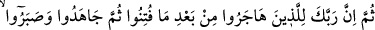
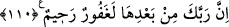

sermayesini dünya pazarında zâyi etmişler, bir fayda elde edememişler ve müflisler gibi
kıyamet gününde eli boş ve gönlü hasret ve nedametle dolu olurlar.
Şeyh Sa‘dî der ki:
Kıyamet günü cennet pazarı kurulur
Mertebeler iyi amellere göre verilir
Oraya götürdüğün sermaye kadar mal alırsın
Eğer müflis isen o zaman mahcub olursun
O öyle kalabalık bir pazardır ki
Eli boş olanın gönlü perişan olur
O kimse ki güzel ameli çoktur
Hakk’ın dergâhında derecesi yüksektir
et-Te’vîlâtü’n-Necmiyye’de der ki: Dünyada gaflet ehli olanlar âhirette hüsran
ehlidir. Burada bir işaret daha vardır: O da âzâların ibadetten gafleti, Rabbânî
mevhibelerden kalblerin mahrûmiyetine sebep olur.”
Büyüklerden birisi der ki: Hicab, ancak nefsin kendisini bilmemesi ve ondan
gafletidir. Şâyet bu cehalet ve gaflet ortadan kalkacak olsa, semanın ortasındaki güneşi
görüp müşahede ettiğin gibi durumu görüp müşahede edersin. Vehb b. Münebbih der
ki: “Ademoğlu gaflet sahibi olarak yaratıldı. Eğer öyle olmasaydı âfiyet içinde
yaşayamazdı.”
Mesnevî’de der ki:
Ey can, bu âlemin direği gaflettir.
Akıllılık, uyanıklık, bu dünya için âfettir.
Akıllılık o âlemdendir,
Galip gelirse bu âlem alçalır.
Akıllılık güneştir, hırs ise buzdur.
Akıllılık sudur, bu âlem kirdir.
Allah’ım! Bizi uyanık ve mütenebbih kullarından kıl, hevayı ilah edinenlerden kılma.
Mükâşefe ehli âriflerin makamlarıyla bizi şereflendir. Yakîn, tahkîk ve temkînin
hakîkatine ulaştır. Yardımcımız ve muînimiz ancak sensin.
110. Sonra şüphesiz Rabbin, eziyet edildikten sonra hicret edip, ardından da